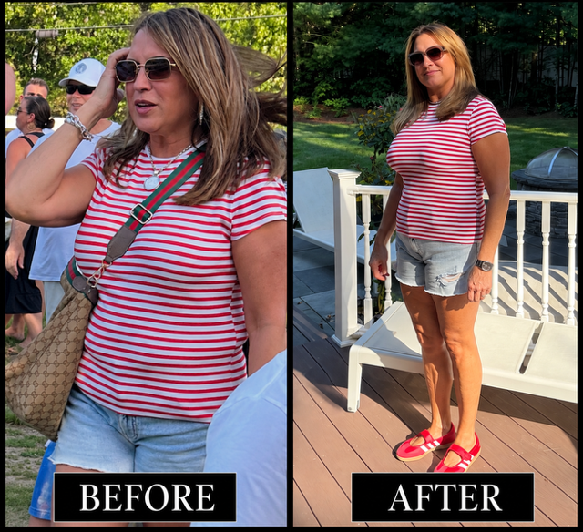

Busy parents
Efficient training that respects work, family responsibilities, energy, and limited time.
See this path →Personalized in-person coaching
Individual coaching for building strength, improving athletic performance, preparing for bodybuilding, or simply feeling capable in the gym.
Find your training path
Choose the situation that sounds most like you. Tory and John will use your consultation to shape the right in-person approach.
Efficient training that respects work, family responsibilities, energy, and limited time.
See this path →Structured coaching for strength, energy, physical performance, and stress management.
See this path →Sports-specific strength, speed, endurance, movement quality, and safe progression.
See this path →Advanced, precise training for muscle development, symmetry, and physique goals.
See this path →Clear, step-by-step coaching that develops confidence, technique, and consistency.
See this path →
Client progress
Every client arrives with a different starting point, schedule, and goal. Tory and John build the training approach around the individual, with clear direction and in-person support.
Progress is personal. These photographs are shared as individual experiences, not promises of a particular result or timeline.
View client journeysAreas of focus
Build useful strength through clear technique and progressive training.
Develop qualities that support the demands of your sport.
Use focused programming for muscle development and physique goals.
Build practical habits that support training, energy, and consistency.
A simple first step
No public packages or rushed checkout. Begin with an email-based consultation request so Tory and John can understand your goals and decide on the right next step.
Complete the short consultation form.
Tory or John follows up by email.
Review training needs and availability.
Agree on the in-person next step.
Common questions
No. Beginners and people returning after a break can start with fundamentals, comfortable progressions, and clear instruction.
Not currently. Version one of the service is focused entirely on in-person training.
Training recommendations, scheduling, and prices are discussed privately after Tory and John review your consultation request.
Tory or John reviews your information and contacts you by email to discuss your goal and the next step.
Start with a conversation